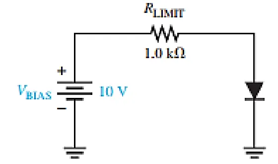
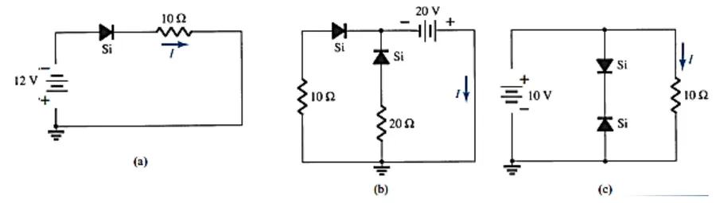
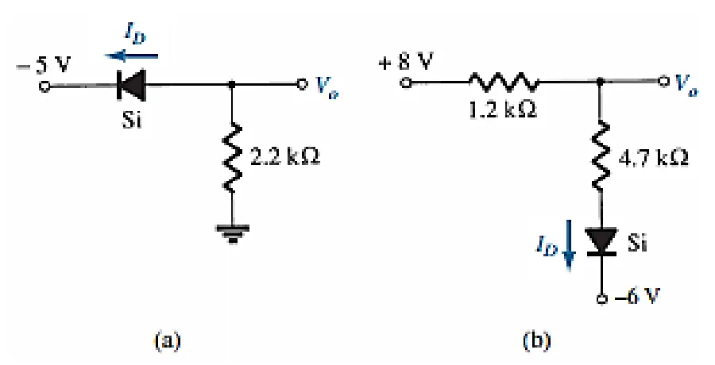
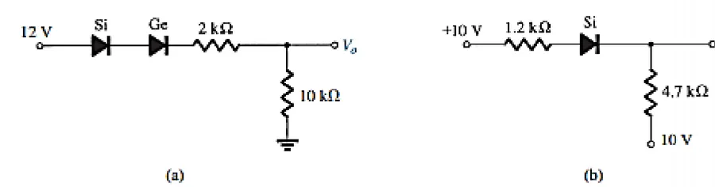
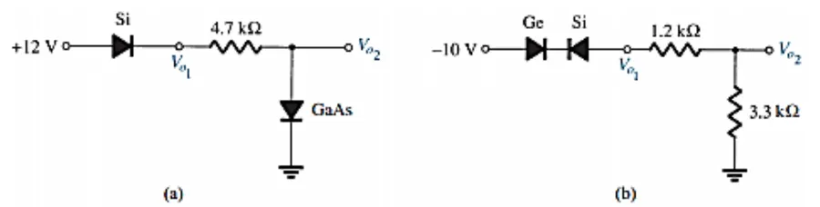
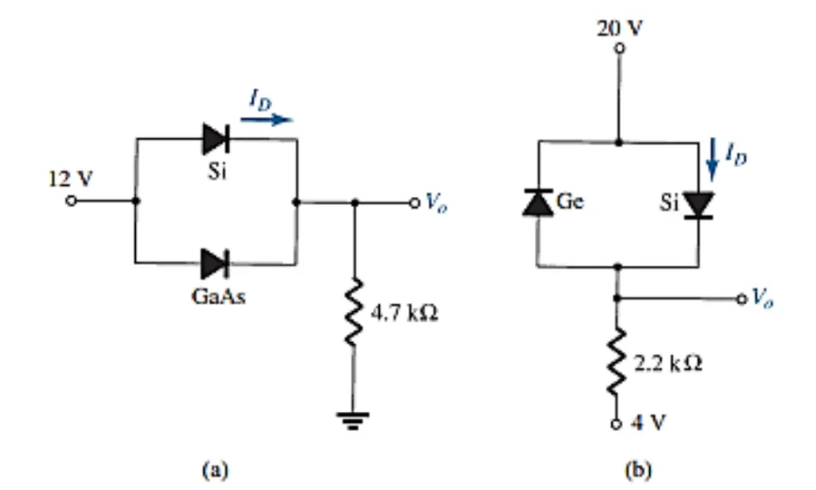
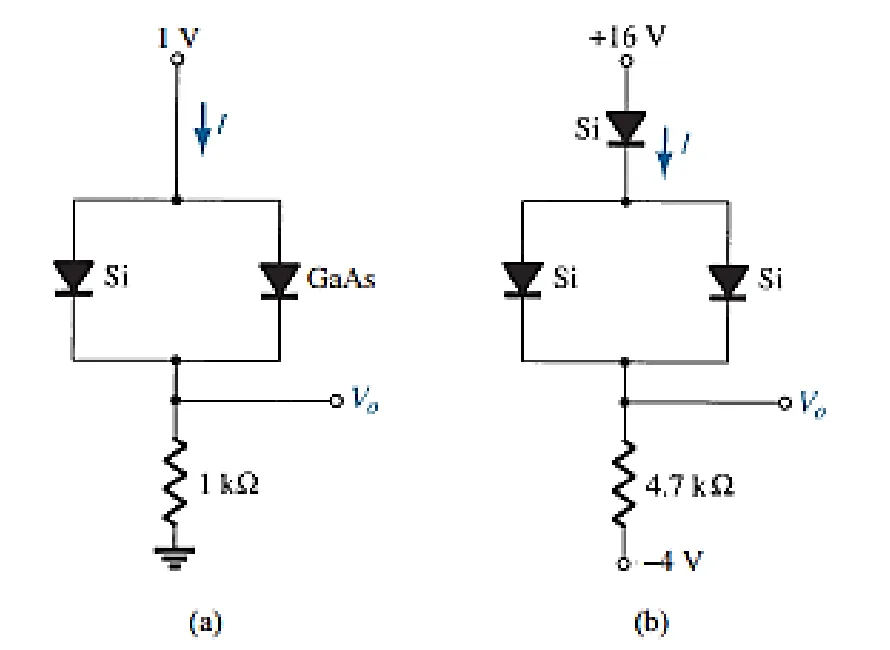
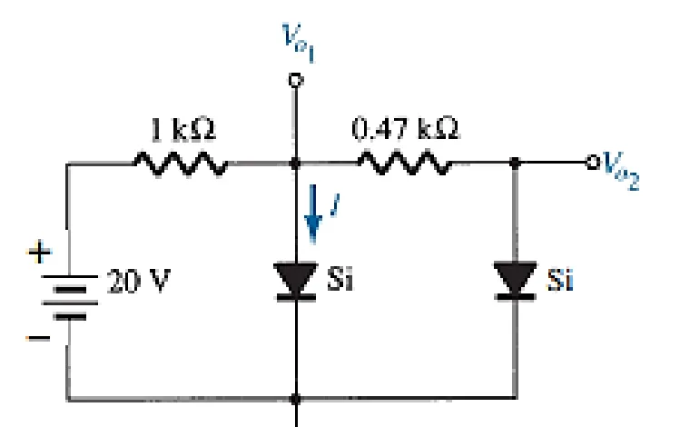
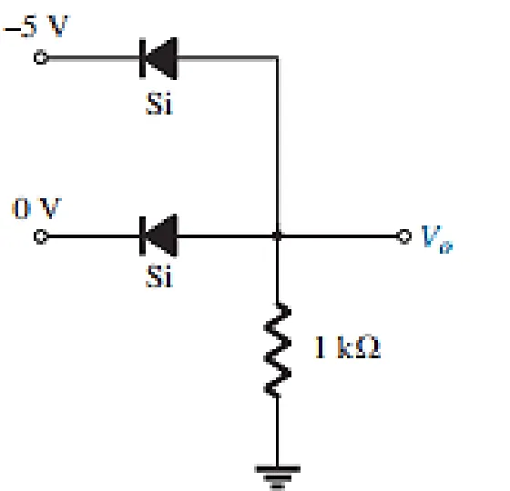
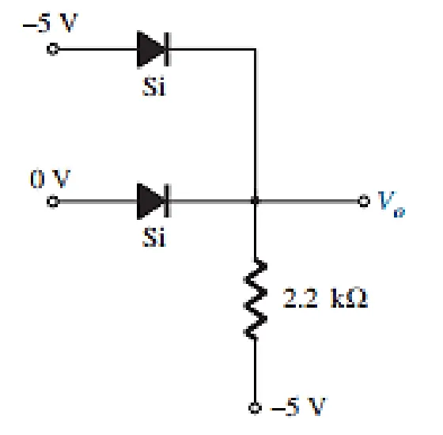

Sheet 2 كل المسائل محلولة، بالحل النموذجي بتاع الدكتور
مفيش امتحانات سابقة للـ Circuits في الفولدر. فأقرب حاجة لشكل الامتحان هي الـ Sheet 2 والـ model answer بتاعها. حاول كل مسألة الأول، وبعدين افتح الحل. الأرقام هنا هي أرقام الحل النموذجي.
١. اتجاه المصادرقبل أي حاجة، شوف التيار هيمشي منين لفين، حتى لو المصدر سالب. ولو عكس السهم، يبقى open.
٢. diodes جنب بعض بـ knees مختلفةاللي الـ knee بتاعه أقل بيفتح الأول ويمسك الـ voltage. والتاني بيفضل off.
٣. diodes ضهرهم في ضهر بعضواحد منهم دايماً reverse، فالفرع كله open، والتيار صفر.
٤. نفس الـ voltage على الطرفينمفيش فرق جهد، يعني مفيش تيار. والـ diode مش هيفتح.
Q1نفس Example 1 في المحاضرة

ده Example 1 بالظبط. جرّبه في مشهد «Example 1 و2»: 10 mA (ideal)، و9.3 mA (practical)، و9.21 mA وVF = 0.792 V (complete).
Q2احسب I (approximate model)

الحل
(a) بص على الـ battery: الـ + تحت. فالتيار بيلف عكس سهم الـ diode، يعني reverse، وI = 0 mA.
(b) KVL: V20Ω = 20 − 0.7 = 19.3 V، يعني I(20Ω) = 19.3 / 20 = 0.965 A. وبنفس الطريقة V10Ω = 19.3 V، يعني I(10Ω) = 1.93 A. والمجموع I = 0.965 + 1.93 = 2.895 A.
(c) الفرع اللي في النص فيه diodes ضهرهم في ضهر بعض، فهو open. يعني I = 10 V / 10 Ω = 1 A.
Q3احسب Vo و ID

الحل
(a) الـ ground (0 V) أعلى من −5 V، فالتيار من الـ ground لـ −5 V، في اتجاه السهم، يعني forward. KVL: −5 + 0.7 − Vo = 0، فـ Vo = −4.3 V. وID = |Vo| / R = 4.3 / 2.2k = 1.955 mA.
(b) من +8 لـ −6، forward. ID = (8 + 6 − 0.7) / (1.2k + 4.7k) = 13.3 / 5.9k = 2.25 mA. وVo = 8 − 2.25 mA × 1.2k = 5.3 V.
الفكرة: المصدر السالب بيكبّر فرق الجهد. لاحظ الـ 8 + 6.
Q4احسب Vo

الحل
(a) Si وGe ورا بعض: 0.7 + 0.3 = 1 V. وvoltage divider: Vo = 10k × (12 − 0.7 − 0.3) / (2k + 10k) = 9.17 V.
(b) الطرفين على +10 V، يعني مفيش فرق جهد ومفيش تيار. فـ Vo = 10 V (القاعدة ٤).
Q5احسب Vo1 و Vo2

الحل
(a) الـ Si forward، فـ Vo1 = 12 − 0.7 = 11.3 V. والـ GaAs للـ ground forward، فبيمسك Vo2 = 1.2 V.
(b) Ge وSi ضهرهم في ضهر بعض، فالفرع open. يعني Vo1 = Vo2 = 0 V (القاعدة ٣).
Q6احسب Vo و ID

الحل
(a) الاتنين forward، بس الـ Si (0.7) بيفتح قبل الـ GaAs (1.2) ويمسك 0.7 (القاعدة ٢). يعني ID = IR = (12 − 0.7) / 4.7k = 2.4 mA، وVo = 11.3 V.
(b) الـ Ge مقلوب، والـ Si اليمين بس forward. ID = (20 + 4 − 0.7) / 2.2k = 10.59 mA، وVo = 20 − 0.7 = 19.3 V.
خد بالك: الرسمة مكتوب فيها «4 V»، بس الحل النموذجي حسبها −4 V (الـ +4 في البسط). ولو كانت +4 فعلاً: (20 − 0.7 − 4) / 2.2k = 6.95 mA. اسأل في الـ lab لو مش واضحة.
Q7احسب Vo و I

الحل
(a) 1 V بس: الـ Si بيفتح ويمسك 0.7، والـ GaAs محتاج 1.2 فبيفضل off. I = (1 − 0.7) / 1k = 0.3 mA، وVo = 0.3 V.
(b) Si فوق، وبعده اتنين Si parallel (يعني 0.7 واحدة): I = (16 − 0.7 − 0.7 + 4) / 4.7k = 18.6 / 4.7k = 3.96 mA، وVo = 16 − 0.7 − 0.7 = 14.6 V.
Q8احسب Vo1 و Vo2 و I

الحل
الاتنين forward: Vo1 = 0.7 V، وVo2 = 0.7 V.
I1kΩ = (20 − 0.7) / 1k = 19.3 mA.
الـ 0.47 kΩ طرفيه الاتنين على 0.7 V، فمفيش تيار: I0.47kΩ = 0.
KCL: I = 19.3 − 0 = 19.3 mA.
Q9 و Q10Negative logic gates (جديدة، مش في المحاضرة)

Q9: negative logic OR

Q10: negative logic AND
في الـ negative logic: الـ level 1 هو الـ voltage الأوطى (−5 V)، والـ level 0 هو الأعلى (0 V). والـ diodes مقلوبة عن المحاضرة.
الحل
Q9: الـ diode اللي عليه −5 V عند الـ cathode هو اللي ON، والتاني OFF. يعني Vo = −5 + 0.7 = −4.3 V، وده قريب من −5، يعني «1»: input واحد بس «1» خلّى الـ output «1»، وده OR.
Q10: الـ 0 V «أكتر موجب» من الـ −5 V، فافترض الـ diode التحتاني ON والفوقاني OFF. يعني Vo = 0 − 0.7 = −0.7 V، وده «0». والنتيجة بتأكد الافتراض. لازم الاتنين يبقوا «1» عشان الـ output يبقى «1»، وده AND.